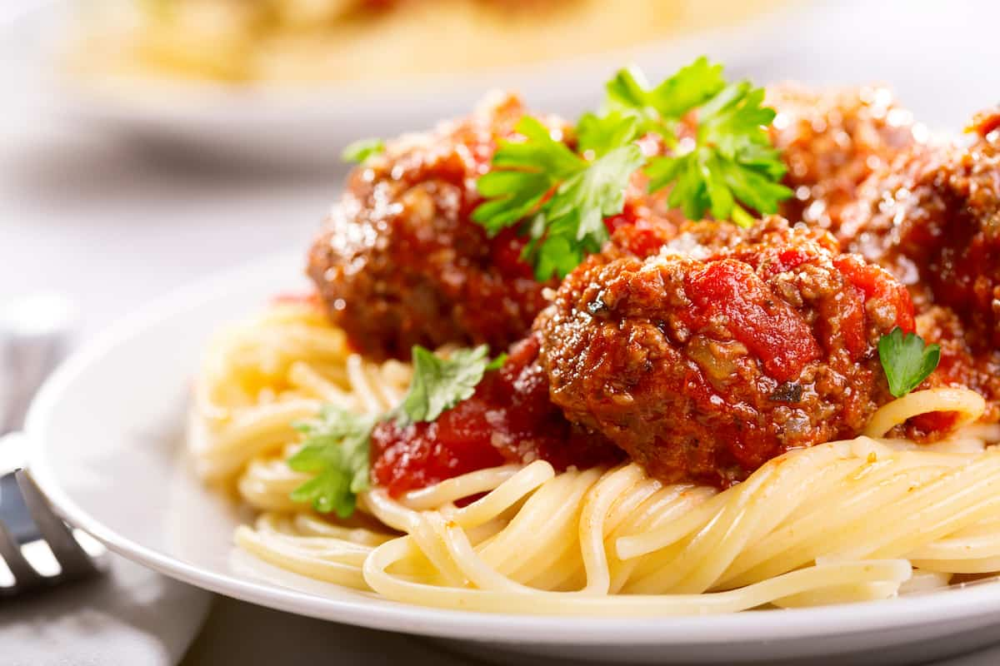

Spaghetti and meatballs

Spaghetti and meatballs, the swedish way.
The meatballs:
- Heat 2 tbsp of the oil in a small frying pan over a medium heat. Add the garlic and cook until soft, about 1 1/2 minutes.
- Whisk together the eggs and parsley in a large bowl. Add the browned garlic, meats and cheese and gently mix together until combined.
- Begin adding breadcrumbs 1 tbsp at a time until the mixture just holds together. Season with salt and pepper, to taste. Cover and refrigerate for at least 30 minutes./li>
- Heat the remaining oil in a large frying pan over a high heat. Form the meat into 4cm balls, add to the pan and fry until golden brown on all sides. Carefully remove to a baking sheet lined with paper towels./li>
The tomato sauce
- Heat the oil in a medium saucepan over a medium-high heat. Add the onion, garlic and chili flakes and cook until the onion is soft. Add the tomato puree and cook for 30 seconds./li>
- Stir in the tomatoes and leave to simmer, uncovered, for about 10 minutes. Add the peppers and parsley sprigs, season with salt and pepper, to taste, bring to a boil and cook for 10 minutes, stirring occasionally./li>
- Add the meatballs, reduce the heat to medium and continue cooking until the meatballs have cooked through and the sauce has thickened, about 30 minutes longer.
Assemble the dish
- Drain the spaghetti and return to the pan. Add some of the sauce and toss to coat for about 30 seconds. Stir the chopped basil into the tomato sauce./li>
- Ladle some of the meatballs and sauce over the spaghetti. Grate lots of Parmesan over the top and garnish with fresh parsley sprigs./li>